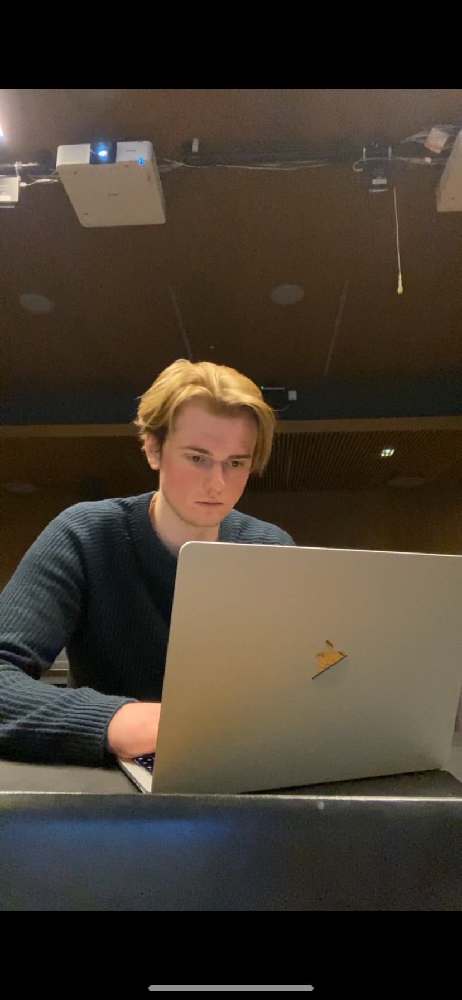

Academics
I am a motivated 23-year-old from Kongsberg, Norway. I recently completed a Bachelors degree in Informatics: Programming and Systems Architecture. The program included 120 credits of core subjects focused on object-oriented programming, algorithms, data management, and system security. 60 credits where used for subjects of the students own choosing.
Throughout my studies, I found myself most motivated by theoretical challenges and problem-solving. This led me to explore algorithms in greater depth through Algorithms: Design and Efficiency, where we worked extensively with algorithm design and the theory behind efficient solutions. I also broadened my academic background by taking courses outside my department, including Calculus and Astronomy as an extra subject.
One subject that especially caught my interest was Semantic Technologies. Although it was a different type of technology than I was used to, I found it both interesting and enjoyable to learn. I also chose Problem Solving with High-Level Languages, which suited my preferred working style and allowed me to approach challenges creatively. I enjoy being given a problem and having the freedom to solve it in my own way.
Finally, I participated in a group project where a fellow student and I were tasked with developing a new TypeScript solution for a drone simulation. The project was divided into four parts, and while it was challenging, we maintained strong teamwork and motivation throughout.
Subjects I Chose
- Algorithms: Design and Efficiency
- Semantic Technologies
- Problem Solving with High-Level Languages
- Calculus
- Astronomy
- Object-Oriented Programming
- Data Management
- System Security
- TypeScript Project (Drone Simulation)
